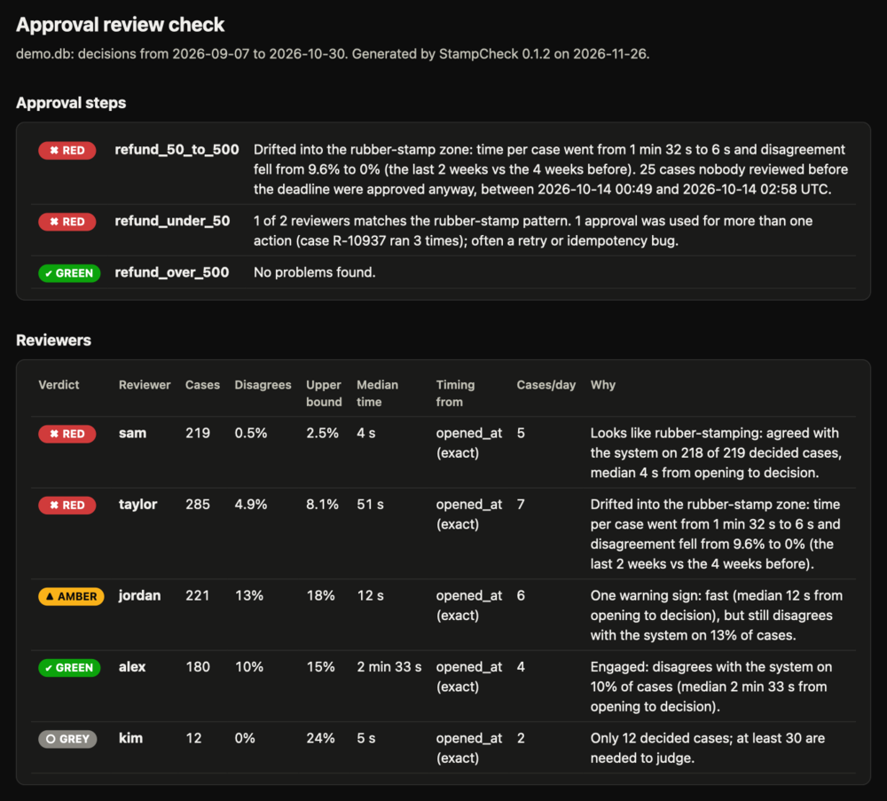
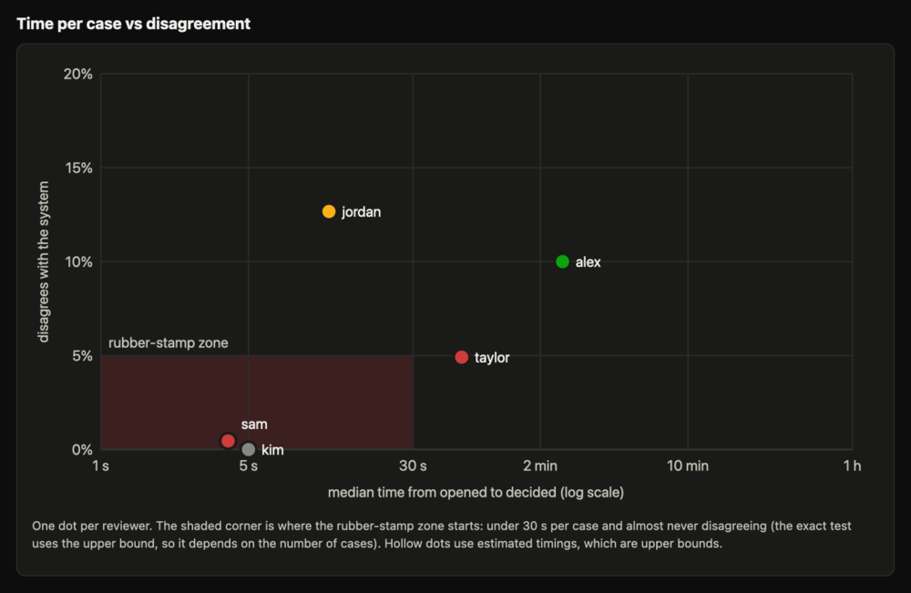
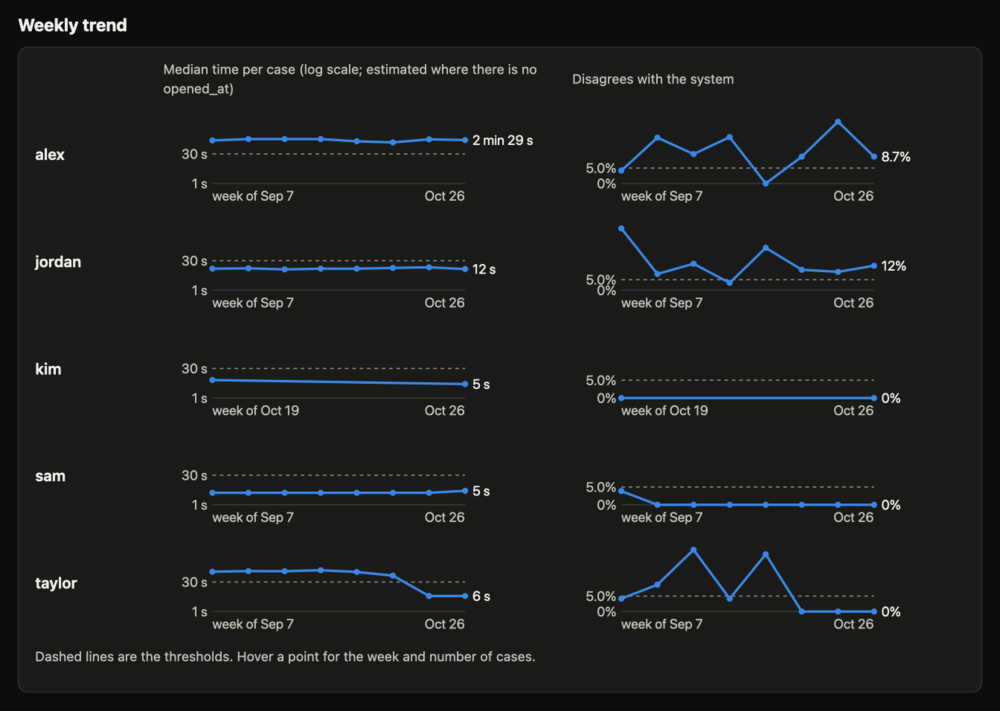
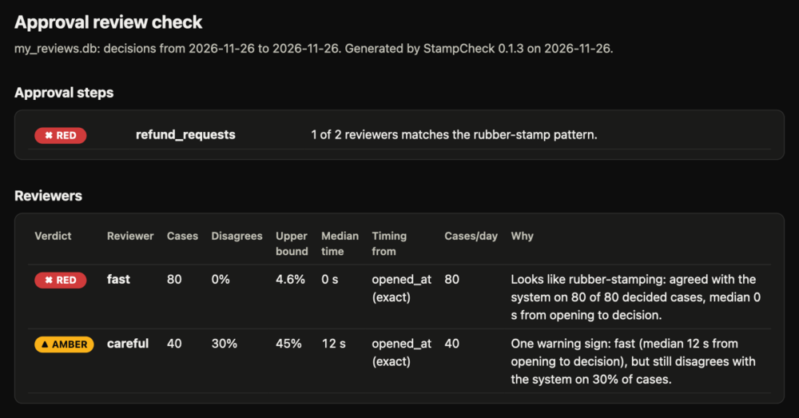

A hands-on tour. It takes about 20 minutes, and every command was tested on StampCheck 0.1.3 from PyPI. You'll run the demo, read the report, change the data to see what StampCheck does with less information, and then review fake refunds yourself and let StampCheck judge you.
Everything happens in a throwaway folder, so nothing touches your own projects.
Open a terminal and paste:
mkdir ~/stampcheck-playground cd ~/stampcheck-playground python3 -m venv .venv source .venv/bin/activate pip install stampcheck curl -O https://raw.githubusercontent.com/noahberry01123/stampcheck/main/examples/play_reviewer.py
mkdir ~\stampcheck-playground cd ~\stampcheck-playground py -m venv .venv .venv\Scripts\Activate.ps1 pip install stampcheck curl.exe -O https://raw.githubusercontent.com/noahberry01123/stampcheck/main/examples/play_reviewer.py
Check that it worked: stampcheck --version should print stampcheck 0.1.3.
If you open a new terminal window later, start with:
cd ~/stampcheck-playground && source .venv/bin/activate
cd ~\stampcheck-playground; .venv\Scripts\Activate.ps1
stampcheck demo
The report opens in your browser. The last lines in the terminal say where it's saved and how to open it again.

The demo builds 8 weeks of made-up data: an AI support agent recommends refunds, and five fictional reviewers approve or reject them. Problems are planted on purpose so you can see each check fire.
| Reviewer | Verdict | What is going on |
|---|---|---|
| sam | RED | Agreed with the AI on 218 of 219 cases, in a median of 4 seconds. The classic rubber stamp. |
| taylor | RED | Careful for 5 weeks, then sped up to 6 s per case. Over all 8 weeks the numbers look fine; only the drift check catches it. |
| jordan | AMBER | Fast (12 s) but disagrees with the AI 13% of the time, so still really checking. One warning sign, not two. |
| alex | GREEN | Takes about 2.5 minutes and disagrees 10% of the time. What you want. |
| kim | GREY | Only 12 cases. Not enough data to judge, which is never the same as a pass. |
The Approval steps at the top are the team-level results for refunds under €50, €50 to €500, and over €500. They also show two non-person problems: 25 cases approved overnight after nobody reviewed them (a timeout default that "fails open"), and one refund paid out 3 times (a retry bug).


The last section, How these verdicts are decided, explains every rule and threshold in plain words.
stampcheck check --source demo.db --out results; echo $?
stampcheck check --source demo.db --out results; echo $LASTEXITCODE
Prints 1, meaning "something is RED". That's what makes it usable in CI or cron.
StampCheck only needs a simple table with one row per reviewed case. Export the demo data:
sqlite3 -header -csv demo.db ".output demo.csv" "SELECT * FROM reviews"
On Windows, get the sqlite3 command-line tools from sqlite.org/download.html first.
Open demo.csv in a spreadsheet app.
Find one of sam's rows: opened at 08:23:33, decided at 08:23:36. That's 3 seconds for a refund decision.
recommended: what the AI suggested.decision: what the human did.reviewer: who decided.opened_at: when they opened the case.decided_at: when they decided.notified_at: when the case entered their queue.category: the approval step.executed: how many times the refund was actually paid.Give each experiment its own --out folder, so the reports don't overwrite each other. Each check ends with the command to open its report.
Most real systems don't log opened_at. Remove it and see what happens:
sqlite3 -header -csv demo.db ".output no_opened.csv" "SELECT case_id, recommended, decision, reviewer, decided_at, notified_at, category, executed FROM reviews" stampcheck check --source no_opened.csv --out results-no-opened
sam drops from RED to AMBER: "Speed can't be confirmed (median at most 7 min 54 s per case, from gaps between consecutive decisions...)".
Without opened_at, StampCheck estimates time per case from the gap since the reviewer's previous decision. That gap can only be longer than the real reading time, because the reviewer might have been on a break. So a short gap proves someone is fast, but a long gap proves nothing. sam still gets AMBER, not GREEN, because agreeing on 218 of 219 cases is a warning sign on its own.
The timing source is named. The last line says "Timing from gaps between consecutive decisions (an upper bound)". With opened_at it says "opened_at (exact, the most precise)".
This is why the docs say: "Works with the approval logs you already have. Adding an opened_at timestamp makes the timings exact."
sqlite3 -header -csv demo.db ".output no_recommendation.csv" "SELECT case_id, decision, reviewer, opened_at, decided_at, category, executed FROM reviews" stampcheck check --source no_recommendation.csv --out results-no-rec
Only the speed checks run: sam and jordan both become AMBER ("fast"), and alex is GREEN ("not fast").
Now StampCheck can't tell whether people agree with the system, so only the speed checks run, and the output says so.
stampcheck init
This writes stampcheck.yaml with every setting, commented. Open it in any text editor, change max_median_seconds: 30 to max_median_seconds: 10, save, then:
stampcheck check --source demo.db --out results-strict
jordan (12 s per case) is no longer "fast", so jordan goes from AMBER to GREEN. sam (4 s) stays RED.
Delete the file afterwards:
rm stampcheck.yaml
Every rule is a setting you can change. The thresholds are judgement calls, and the report always prints the ones it used.
stampcheck check picks up a stampcheck.yaml from the current folder automatically, so it would also apply to the next experiments. (stampcheck demo always ignores it.)
This is the fun one. play_reviewer.py shows you fake refund requests, each with an AI recommendation. Some of the AI's recommendations are wrong: look out for the "Account notes" line.
Round 1, as a careful reviewer (40 cases). Read each case, and reject the ones with a red flag:
python play_reviewer.py careful
Round 2, as a rubber-stamper (80 cases). Just hold down Enter, which means "go with the AI":
python play_reviewer.py fast 80
Then let StampCheck judge you:
stampcheck check --source my_reviews.db --out results-me
Open the report with the command it prints at the end.

Every answer is logged with StampCheck's review() helper, which records the moment each case appeared and the moment you answered.
Your careful round will probably come out AMBER: "fast (median 12 s ...), but still disagrees with the system on 30% of cases". These fake cases are short, so you read them in well under 30 seconds. Speed alone isn't the problem: you caught the bad recommendations, so StampCheck doesn't call it rubber-stamping. Take more than 30 seconds per case and you'd be GREEN.
Why 80 cases? Try a shorter fast round:
python play_reviewer.py fast2 40
fast2 gets AMBER, not RED: "It agreed with the system on 40 of 40 decided cases, but that is too few cases to rule out a disagreement rate up to 8.8%."
With fewer cases, even perfect agreement can't be proven. The rule needs the 95% upper bound on the disagreement rate to be under 5%, and with 0 disagreements that takes about 75 cases.
To start over, run rm my_reviews.db.
| Term | Meaning |
|---|---|
| RED | Both warning signs, or a serious problem (timeouts that approved, duplicate payouts, drift into the danger zone). |
| AMBER | One warning sign. |
| GREEN | Looks engaged. |
| GREY | Not enough data. That's never a pass. |
| Disagreement | How often the human did something other than what the AI recommended (escalating counts). |
| Upper bound | How high the real disagreement rate could plausibly be, given how few cases there are. Small samples get the benefit of the doubt. |
| Median time per case | Half the decisions were faster than this. |
| Drift | The last 2 weeks compared with the 4 weeks before. |
| Timing source | opened_at is exact. The other two sources are upper bounds, which can prove someone was fast but never prove they were careful. |
| Data sources | Works with CSV, TSV, JSON lines, SQLite and Postgres. |
| Report footer | Patterns are evidence to look into, not proof that anyone did anything wrong. |
deactivate rm -rf ~/stampcheck-playground
deactivate Remove-Item -Recurse -Force ~\stampcheck-playground